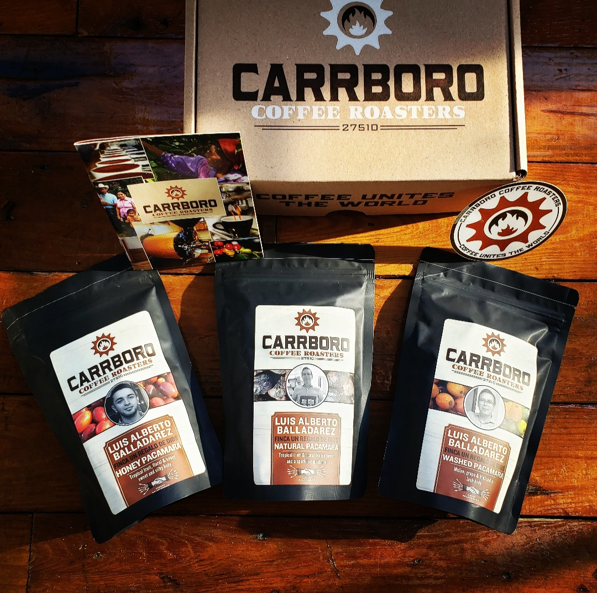
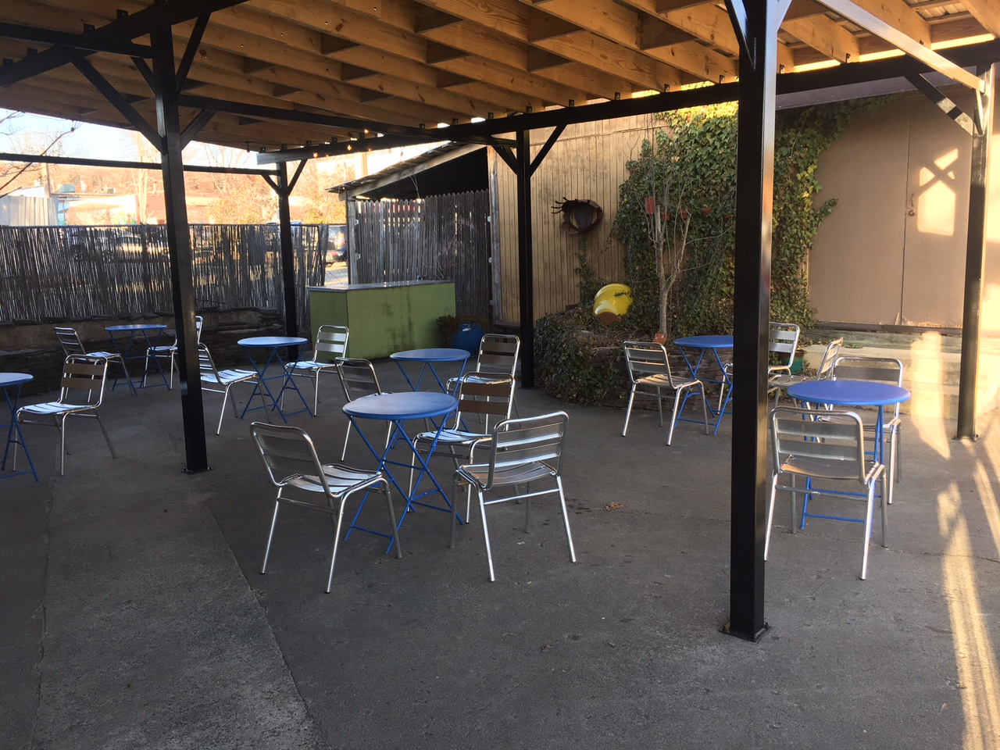
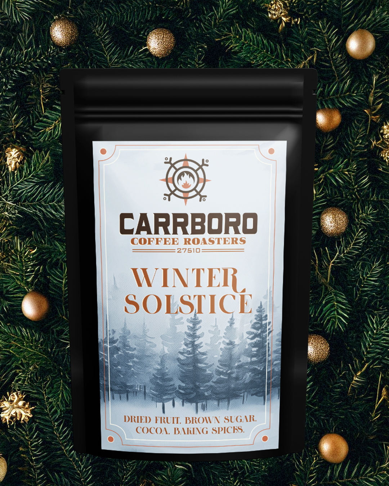

Coffee & toastables
House drinks and cafe bites — full board lives on Toast.
101 S Greensboro · Carrboro
Open Eye Cafe roasts the day with coffee, tea, beer & wine, live music, and a patio locals love. Order on Toast or settle in on Greensboro Street.
Why this preview
openeyecafe.com still feels like a long 2017 WordPress build. This sample keeps your real Toast menu, Greensboro address, phone, info@carrborocoffee.com, Instagram, and Facebook — photo-forward and sticky on a phone.

House drinks and cafe bites — full board lives on Toast.

Carrboro outdoor energy with art on the walls and music on the calendar.

Beer, wine, tea, and a room built for laptops, friends, and live sets.
Order ahead
Same online menu button you already use — just easier to find before you park on Greensboro.
